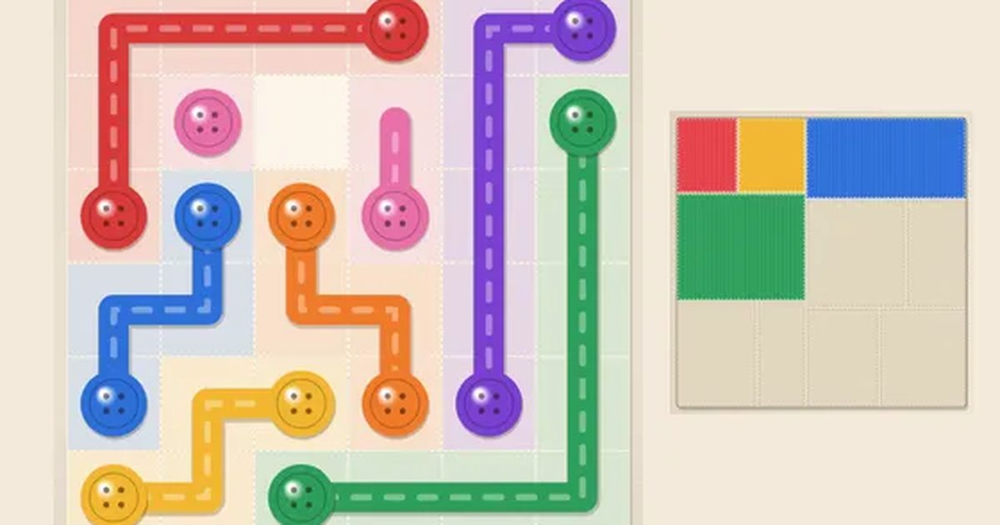

색실 잇기
Color Thread
잇기 퍼즐 · 수집무료설치 없음폰 · PC
▶ 지금 바로 하기로그인 없이 브라우저에서 바로 시작돼요
어떤 게임인가요?
같은 색 단추끼리 실로 이어 주세요. 실은 서로 겹칠 수 없고, 판의 모든 칸을 빈틈없이 채워야 성공! 한 단계를 깰 때마다 조각보가 한 조각씩 물들어요.
목표 · 같은 색 단추 두 개를 실로 잇고, 판의 모든 칸을 실로 빈틈없이 채우세요.
이렇게도 찾아요
선 잇기색깔 연결같은 색 잇기파이프 연결connect the dotscolor linkline connect puzzle
#선잇기 #색깔잇기 #퍼즐게임
게임 방법
- 단추에서 끌기 시작하면 지나가는 칸마다 실이 놓여요. 위·아래·옆으로만 이어져요.
- 실끼리는 겹칠 수 없어요. 다른 실 위로 지나가면 그 실이 그 자리에서 끊겨요.
- 이은 실의 중간 칸을 다시 누르면 거기서부터 다시 그릴 수 있어요.
- 모든 색을 잇고 빈칸이 하나도 없으면 성공!
- 별: 색마다 한 번씩만 손대면 3개 · 더 손대면 2개 · 💡 실 하나 잇기를 쓰면 1개.
- 8장 × 10단계. 한 단계를 깰 때마다 그 장의 조각보가 한 조각씩 물들고, 10조각을 모으면 조각보 한 장 완성.
등장하는 것들
- 단추 · 같은 색끼리 잇기
- 실 · 겹치면 끊겨요
- 조각보 · 단계마다 한 조각
공략 팁
- 판의 가장자리와 구석부터 채워 보세요. 구석은 갈 길이 하나뿐이에요.
- 가까운 단추끼리 먼저 잇고, 먼 단추는 빈 곳을 돌아가게 하세요.
- 막히면 다른 실을 끊고 다시 그려도 손댄 횟수는 그대로예요.
이런 게임도 있어요
 윷놀이전통 놀이 · 1P/2P
윷놀이전통 놀이 · 1P/2P 방울 터뜨리기퍼즐 · 조준
방울 터뜨리기퍼즐 · 조준 사과 10 만들기퍼즐 · 두뇌 · 2분
사과 10 만들기퍼즐 · 두뇌 · 2분 타자 게임 · 낱말 비타자 연습 · 키보드
타자 게임 · 낱말 비타자 연습 · 키보드 블록 퍼즐퍼즐 · 타임어택
블록 퍼즐퍼즐 · 타임어택 꿈틀 지렁이고전 · 한 손
꿈틀 지렁이고전 · 한 손